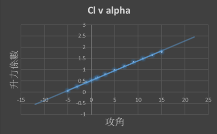
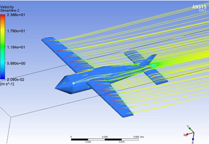
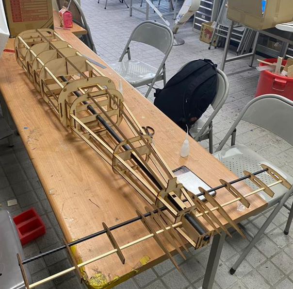
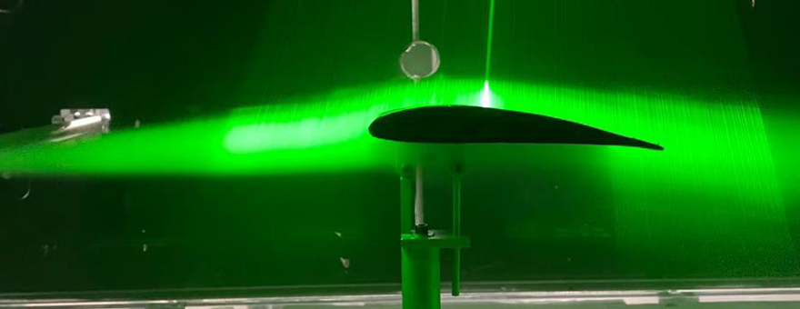

Fixed-Wing Drone
Project Overview
Developed a fixed-wing camera drone from concept to prototype with a fixed motor, ensuring a maximum weight of 10kg. The project incorporated fluid analysis for aerodynamics, rib modeling, and final assembly. Delivered a fully functional prototype with optimized camera stability while adhering to strict weight constraints through a rigorous and comprehensive design process.
Key Contribution
NACA Wing Simulation Analysis
Considered Profiles: NACA 4412 and NACA 5412
Based on Lift Performance and Drag Characteristics:
• Data A demonstrates superior lift characteristics, particularly at the cruising angle of attack.
• Data D reveals low drag coefficients associated with the NACA 4412 profile, making it an excellent choice for aerodynamic efficiency in the design.
.jpg)
Optimizing Center of Gravity - Problem Solving
•Original COG location: to front 0.54 M
•Identified issue: Insufficient lift for a cruising angle of 1.6 degrees
•Adjustment made: Relocated COG to front 0.55 M
•Purpose of adjustment: Ensuring sufficient lift during cruising at an angle of 1.6 degrees
•Result: An increase of 72.522N in lift, improved stability and performance during flight
Fluid Analysis
Utilized ANSYS for fluid mechanics analysis across an angle range of -4 to 4 to establish the relationship between lift and angle of attack

The findings contribute to a comprehensive understanding of aerodynamic performance and assist in locating the gravity center for optimal stability.

Results and Impact
The drone was successfully optimized for takeoff and landing, with enhanced stability and performance. Using ANSYS CFX, components were refined, including the design of a camera stand that reduced vibration frequency to 130-200 Hz, significantly improving photo quality.

